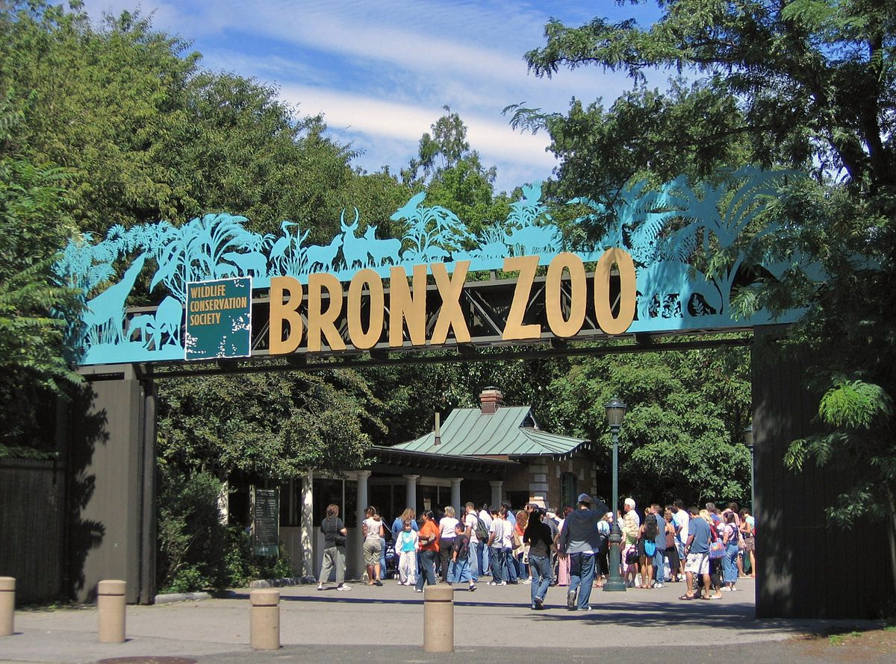
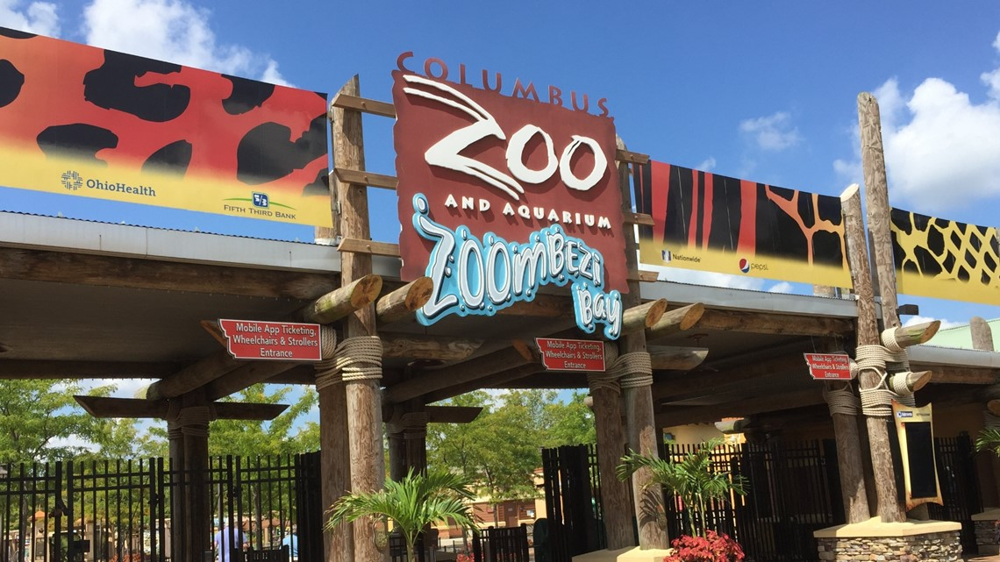

San Diego Zoo
- Why is the San Diego Zoo famost?
Firs, This Zoo is super large. It is about 100 acres in size. The main prupose for the creators were
desine it like naturalistics habitats and unice encounters.
- How many animals are there?
It is home for more than 3,700 rare animals. Also, there are around 660 species.
- Are there only animals present?
No. Is is also a place for more than 700,000 plants.
- How much cost a one-day ticket?
Access to all regularly scheduled shows cost around 62$ for visitors under 12 age
- Where I can find more information about?
You can visit the official webpage.

Bronx Zoo
- Why is the Bronx Zoo famost?
Firsof all, this zoo is an award-winning exhibitions. It is the biggest metropolitan
zoo that is located on more than 265 acres.
- How many animals are there?
This zoo is a home for more than 4,00 animals of 650 species.
- Is this zoo the biggest in the world?
No. The awars call the Henry Doorly Zoo in Omaha, Nebraska is called as the best one. The San
Diego zoo is taking the second place.
- How much cost a one-day ticket?
Limited admission tickets are for the park entry cost at least16.95$ for visitors under 13 age and 24.95$ (age 13+)
- Where I can find more information about?
You can visit the official webpage.

Columbus Zoo
- Why is the Columbus Zoo famost?
This Zoo is the most attractive the regional place that made a global impact.
This Zoo is also a nonprofit organization.
- How many animals are there?
The Columbus Zoo is a home for 800 species and to be more specific to more than 7,000 animals.
- Is this zoo the biggest in the world?
Kind of. In 2009, This zoo was named by the USA Travel Guide as the #1 in United States.
In 2012 it was named as one of the best zoo by Besties Readers Choise.
- How much cost a one-day ticket?
There are two tipes of tickets(residents and general admissio rate)General admission: about 21.99$ for older than 10 year.
- Where I can find more information about?
You can visit the official webpage.
Bronx Zoo